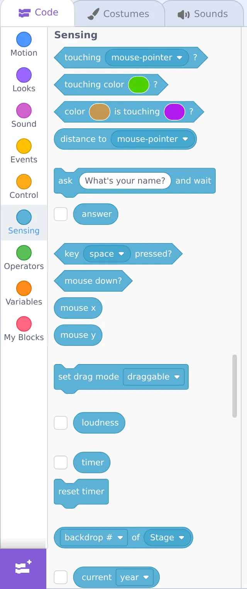

🔀 Lesson 2.3: Conditionals & Sensing
Up to now your cat has followed a script. Now it starts to think — reacting to key presses, touches, and questions with "if this, then that." This is the moment a project becomes a game.
📚 What You'll Learn
By the end of this lesson, you will be able to:
- Use if/then and if/then/else to make decisions
- Read Sensing blocks (touching, key pressed, mouse)
- Combine forever + if to check things constantly
- Make the cat move with the arrow keys and react to touches
- Teach "if/then" to your child through everyday rules and a drive-the-cat game
Estimated Time: 40 minutes • Builds on: Loops (2.2) • Project: a cat you drive with the arrow keys
In This Lesson
🎓 Learn It: The if/then block
An if/then block (orange Control category) says: "if something is true, then run the blocks inside." If it's not true, Scratch skips the inside and moves on. It's a fork in the road.
The pointy hexagon slot only accepts a true/false question — called a condition. Those hexagon-shaped blocks come mostly from the Sensing category.
🎓 Learn It: Sensing blocks
Sensing blocks are the cat's "senses" — they answer questions about the world of your project.

| Sensing block | Answers… |
|---|---|
| touching mouse-pointer? | Is this sprite touching the pointer (or another sprite/edge)? |
| key [space] pressed? | Is that key being held down right now? |
| mouse down? | Is the mouse button being clicked? |
| touching color? | Is the sprite touching a specific color (great for mazes)? |
Drop a hexagon Sensing block into the hexagon slot of an if and you've built a sentence: "if touching the pointer, then…"
🎓 Learn It: forever + if — the "game loop"
Here's the pattern behind nearly every Scratch game: a forever loop that constantly checks an if. Because the check repeats endlessly, the sprite reacts the instant something becomes true.
Now whenever the mouse touches the cat, it meows — again and again — because the forever loop never stops asking. Without the forever, Scratch would check just once at the start and never again.
🎓 Learn It: if/then/else — two paths
Sometimes you want one thing or another. The if/then/else block has two mouths: the top runs when the condition is true, the bottom when it's false.
Read it aloud: "If space is pressed, say Jump — otherwise, say Waiting." Kids find "otherwise" a friendlier word than "else."
🛠️ Try It: Drive the cat with arrow keys
Let's make the cat controllable — the foundation of every game. Build this on the cat:
- Add when 🟩 clicked, then a forever loop.
- Inside, add four if/then blocks, one per arrow key.
- In each, use Sensing's key [ ] pressed? and Motion's change x/y to nudge the cat.
Press the green flag and use the arrow keys — the cat glides around the stage under your control. You just built player movement! 🎮
🐛 Cat won't move?
Click the stage once so it has "keyboard focus," then try the arrows. And double-check every change x/y block sits inside its if, which sits inside the forever.
🌱 Growth mindset: fiddly means your brain is stretching
Blocks inside blocks inside blocks is the first time Scratch asks you to hold several layers in your head at once — and it feels clumsy for almost everyone. That awkward, "wait, where does this go?" feeling isn't a sign you're bad at this; it's what learning a new skill physically feels like. Notice that you checked, rearranged, and got it working. When your child's cat won't budge, name the effort out loud: "That nesting was tricky and you stuck with it — that's exactly how coders get good." Praising the persistence, not the "smartness," is what keeps them trying the next hard thing.
💬 Teach It: Decisions everywhere
Conditionals map perfectly onto how kids already think about rules.
Make it a call-and-response
"IF it's raining, THEN we bring an umbrella — otherwise we don't. Give me an 'if/then' rule from your day!"
Kids fire back great ones: "If the light is green, then go." "If I finish veggies, then dessert." Each is a conditional.
Coach the arrow-keys build with questions
- "How does the cat know you pressed a key? Which color has 'senses'?" → Sensing.
- "We want it to check all the time. What loop does that?" → forever.
👧 Ages 5–7
One if/then is plenty: "if touching the pointer, meow." Skip the four-arrow build or do it together, one arrow at a time.
🧒 Ages 8–11
The arrow-keys project is a big hit. Then challenge: "Make it say something if it touches the edge."
🧑 Ages 12+
Introduce Operators (green) to combine conditions: "if touching edge and key space pressed." Real logic!
⚠️ Common kid bug
They use a single if with no loop and wonder why it only checks once. The fix is almost always "wrap it in forever." Make that your shared catchphrase.
🎯 Quick Check
Question 1: What shape of block fits in an "if ___ then" slot?
Question 2: Why do most games wrap their "if" checks in a forever loop?
Question 3: "if/then/else" is best when…
📓 Learning Journal
Take five minutes to write it down
Grab the same notebook or notes app you've been using. A few honest lines now will make the next lesson easier — and give you a record of how far you've come.
- Key concepts: In your own words, what is a condition? Why does an if almost always need a forever around it to be useful?
- What clicked: Was it reading an if-block aloud as a sentence? Or the moment the cat first moved when you pressed an arrow key?
- Questions & confusion: Is the difference between if/then and if/then/else clear? Which part of the nesting still feels shaky?
- Ideas to try: Write one "if ___ then ___" rule you'd like to add — maybe "if touching the edge, then say Ouch," or a color-maze wall.
- Progress & feelings: You've now met sequences, loops, and conditionals. How confident do you feel compared with Lesson 1.1? What if/then rules did your child come up with?
💡 Teach It tip: Have your child write down (or draw) three "if/then" rules from real life — bedtime, crossing the street, a favorite game. Seeing that they already think in conditionals makes the blocks feel familiar.
Summary & Module 2 Complete 🎉
🎓 Key Takeaways
- if/then runs blocks only when a condition is true; if/then/else gives a second path.
- Conditions are hexagon Sensing blocks — touching, key pressed, mouse down.
- forever + if is the pattern behind interactive projects and games.
- Wrap checks in a loop, keep blocks nested correctly, and read conditions aloud as sentences.
🏆 Module 2 done!
Sequences, loops, and conditionals — you now know the three ideas that underpin all programming, in any language.
🏅 What You've Accomplished
- Made the cat react to touches and key presses with if/then
- Built a forever + if game loop — the heart of every game
- Created a cat you can drive with the arrow keys
- Finished Module 2: sequences, loops, and conditionals
📋 Before the Next Lesson
- Save your arrow-keys project — you'll reuse this movement code in games
- Try the "say Ouch if touching the edge" challenge together
- Play a quick round of "if/then" rules at dinner or in the car
- Write your journal entry
❓ Common Questions at This Stage
My child's cat moves only once per key press, or jerks around. Is that a bug?
Usually it's using the when [key] pressed event block instead of a forever loop with key pressed? checks. The event version has a built-in keyboard-repeat delay; the forever + if version checks every frame and feels smooth. Both are "correct" — the loop is just better for games.
When should I use if/then/else instead of two separate ifs?
Use else when the two outcomes are opposites of the same question — "if space pressed, jump; otherwise, stand." Use separate ifs when the checks are independent, like the four arrow keys, where more than one could be true at once.
The hexagon slots and Operators blocks look intimidating. Do we need them yet?
Not yet. Sensing blocks alone will carry you through Module 3. Operators like and, or, and pick random will show up naturally when you build the catch game in Lesson 3.2, one block at a time.
🔭 Looking Ahead
Module 3: Building Real Projects starts with Lesson 3.1: An Interactive Animated Story — two characters, a real backdrop, and broadcasts that let sprites take turns talking. Everything you've learned so far comes together into something your child will want to show off.
💛 Encouragement for the Journey
A couple of weeks ago "if/then/else" sounded like computer-speak. Now you've built a controllable character and taught the idea through everyday rules. You've finished the conceptual core of programming — the rest is building on it.